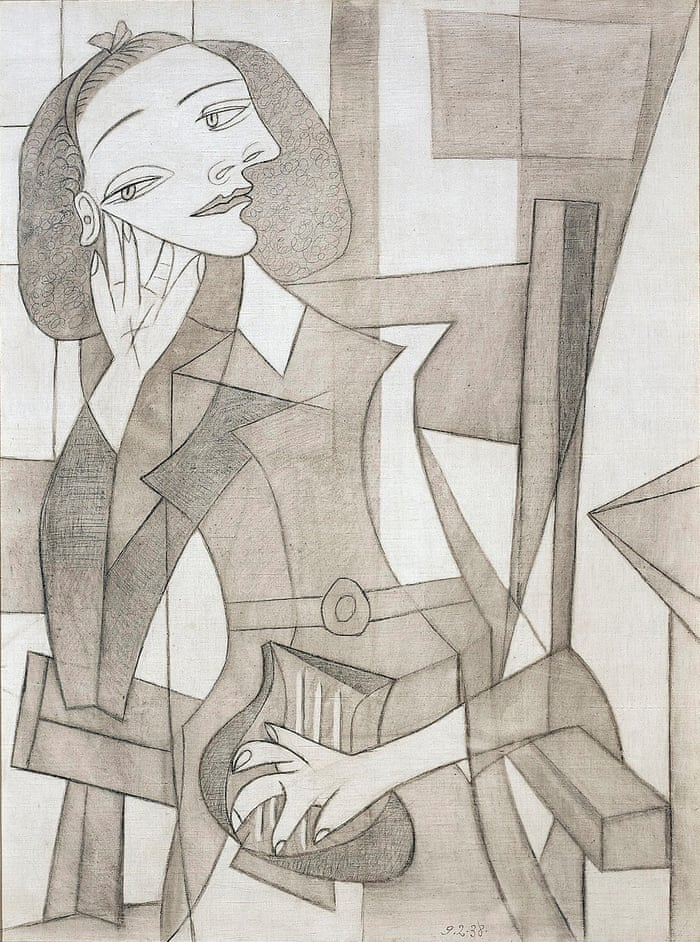

SHORT BIOGRAPHY
Hello! I'm Derick Victor,a student driven by deep curiosity for both logic and creativity. I spend most of time exploring algorithms and coding language. I am from Dar es salaam born and raised .
I am shaped by the experiences I got through moments with different people: the friends and acquaintances I had at Sacred Heart primary School, Marian Secondary School, and Kibaha Secondary School. Even now at UDSM, I have never stopped learning as Harry Truman said "It's what you learn after you have known it all that counts", that's my mind
SKILLS
Engineering
- Data analysis
- Cloud architecture
Creative
- Painting
- Creative Writing
- Piano
EDUCATION
| Level | School | Year |
|---|---|---|
| Primary School | Sacred Heart Primary School | 2012 - 2018 |
| Secondary School | Marian Secondary School | 2019 - 2022 |
| High School | Kibaha Secondary School | 2023 - 2025 |
Hobbies & Interests
-
Singing
Hip-Pop vocalist: music is my language for expressing what words can't.
-
Painting & Drawing
I am a big fan of great artist like Picasso.
-
Reading books
Enjoy books on crime thriller and sci-fi..
Enhance creativity as i tend to use my imagination.
ACTIVITIES

LINK
Mentor's YouTube Channel
Contacts:
Email:deriq99@gmail.com
Phone No. 0696149464